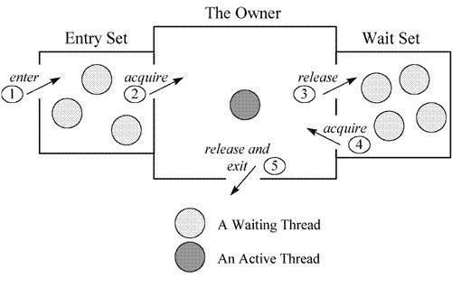
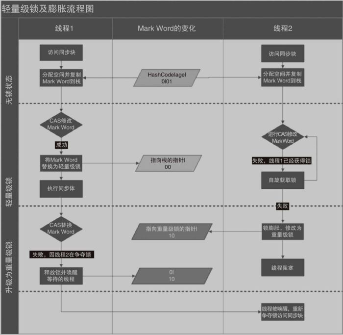
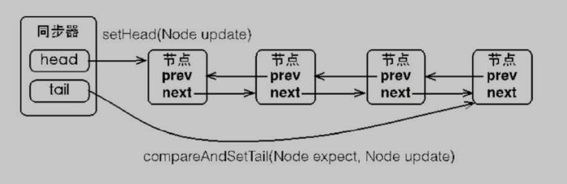
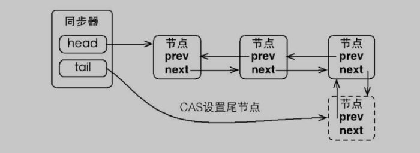
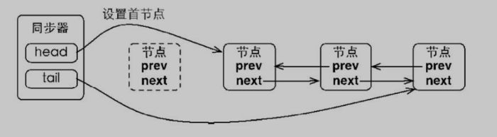
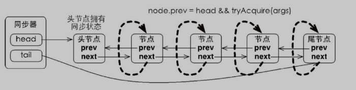
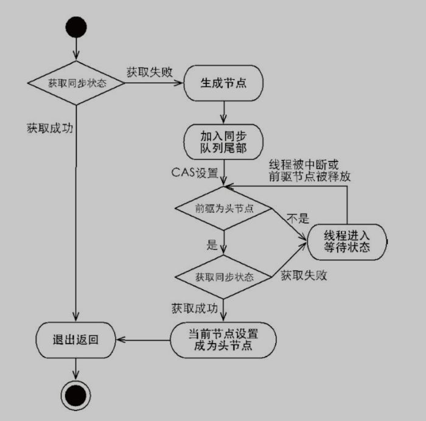
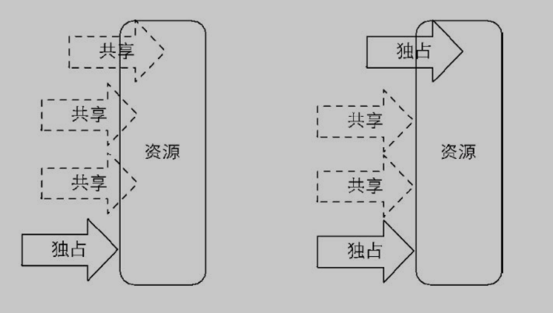
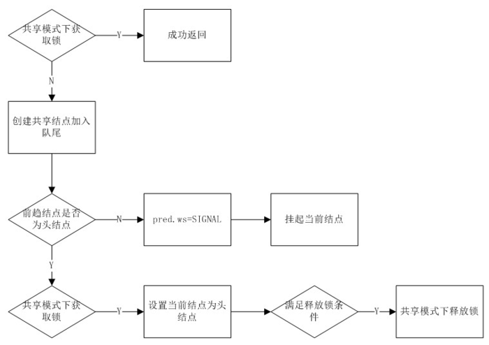

在并发系统中常常需要对某些业务资源进行加锁操作，解决一些因并发操作导致的数据不一致,以及读到脏数据问题。
加锁的目的本质上是对资源的一种操作控制,防止其数据或状态出现不可控的变化。
java中对于锁的支持
使用volatile
java提供了volatile关键字,在多个处理器中可以立即读到最新的值,即一个线程修改值后另一个线程立即能获取到更新后的值。
在某些适用volatile场景的地方使用volatile控制线程变量可见性会起到很好的效果,虽然volatile不能代替synchronize(因为volatile不能提供原子操作,只是对于多线程的变量可见性),但在适用的场景下要优于synchronize执行成本,因为它不会引起线程上下文的切换和调度。
使用synchronize
synchronize通过锁机制实现同步具体锁对象有三种方式
- 普通方法的同步,锁是当前实力对象
- 静态方法的同步,锁是当前类的class对象
- 对于同步代码块,锁是括号内的对象
synchronize的实现原理
synchronize是通过jvm执行Monitor的互斥执行和协作来实现锁的。
互斥:使用synchronize获取的对象锁来进行共享数据线程互斥
协作:通过notify/notifyAll/wait方法同步线程之间的操作
必要条件:每个Object和Class都关联了一个monitor
Monitor 的工作机理
- 线程进入同步方法中。
- 为了继续执行临界区代码，线程必须获取 Monitor 锁。如果获取锁成功，将成为该监视者对象的拥有者。任一时刻内，监视者对象只属于一个活动线程（The Owner）,对于重入的synchronize关键字monitor会讲进入数自增1,所以synchronize是可重入锁
- 拥有监视者对象的线程可以调用 wait() 进入等待集合（Wait Set），同时释放监视锁，进入等待状态。
- 其他线程调用 notify() / notifyAll() 接口唤醒等待集合中的线程，这些等待的线程需要重新获取监视锁后才能执行 wait() 之后的代码。
- 同步方法执行完毕了，线程退出临界区，并释放监视锁。

synchronize锁机制的优化
为了减少锁获取和释放带来的开销在JSE1.6版本锁的状态达到了四个,级别从低到高依次为
无锁状态<偏向锁状态<轻量级锁状态<重量级锁状态随着竞争激烈程度依次递增。synchronize不支持锁的降级,这种策略是为了提高获取和释放锁的效率。
偏向锁-一段代码一直被同一个线程访问,那么该线程自动获取锁,此举为了降低获取锁的代价。
优点:加锁和解锁不需要额外的消耗,和非同步代码比较仅存在纳秒级别的差距。
缺点:一旦出现锁竞争会有撤销锁的消耗。
轻量级锁-当锁是偏向锁的时候，被另一个线程所访问，偏向锁就会升级为轻量级锁，其他线程会通过自旋的形式尝试获取锁，不会阻塞，提高性能。
优点:线程不阻塞,提高性能
缺点:如果长时间得不到锁自旋会消耗cpu
重量级锁-当锁是轻量级锁的时候,另一个线程虽然在自旋但不会一直自旋,当自旋到一定次数还没有获取到锁就会进入阻塞该锁膨胀为重量级锁,重量级锁会让其他申请的线程进入阻塞,性能降低。
优点:不会消耗cpu
缺点:线程阻塞,响应时间缓慢。
自旋状态-轻量级锁的具体实现原理,指尝试获取锁的线程不会立即阻塞，而是采用循环的方式去尝试获取锁，这样的好处是减少线程上下文切换的消耗，缺点是循环会消耗CPU。

CAS(compare and swap)和AQS(AbstractQueuedSynchronizer)
CAS的介绍
CAS是一个原子操作,利用了处理器的CMPXCHG指令实现的,CAS操作包括三个操作数,内存位置(V),预期原值(A)和新值(B)。如果内存位置和预期原值相等则处理器会将内存位置更新为新值(B),若反之则不做任何操作。
CAS的优点在于竞争不大的情况下系统开销小,缺点是只能保证一个变量的原子操作,以及不能避免ABA问题(如果另一个线程修改V值假设原来是A，先修改成B，再修改回成A,当前线程的CAS操作无法分辨当前V值是否发生过变化)。
AQS的介绍
AQS是JDK下提供的一套用于实现基于FIFO等待队列的阻塞锁或相关的同步组件的一个同步框架。
AQS的实现原理
内部通过一个volatile的int类型成功变量表示同步状态
1 | /** |
内置的FIFO双向队列来完成获取锁线程的排队工作
同步器包含两个节点类型的应用，一个指向头节点，一个指向尾节点，未获取到锁的线程会创建节点线程安全（compareAndSetTail）的加入队列尾部。同步队列遵循FIFO，首节点是获取同步状态成功的节点。

未获取到锁的线程将创建一个节点，设置到尾节点

首节点的线程在释放锁时，将会唤醒后继节点。而后继节点将会在获取锁成功时将自己设置为首节点

独占式和共享式获取锁
独享锁-指该锁一次只能被一个线程所持有
共享锁-指该锁可被多个线程所持有- 独占锁(ReentrantLock)
每个节点自旋观察自己的前一节点是不是Header节点，如果是，就去尝试获取锁

独占式锁获取流程

- 共享锁(CountDownLatch)
共享式与独占式的区别

共享锁获取流程

Java中的锁 (原理、锁优化、CAS、AQS)
Java中的锁分类